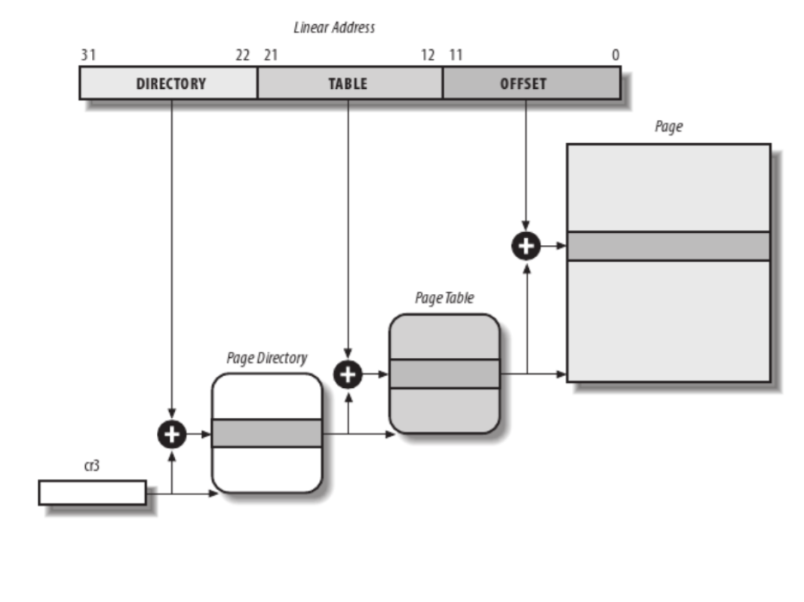

SO2 Lab 06 - Memory Mapping¶
实验目标¶
- 理解地址空间映射机制
- 了解与内存管理相关的重要结构
关键词：
- 地址空间
mmap()struct pagestruct vm_area_structstruct vm_structremap_pfn_rangeSetPageReserved()ClearPageReserved()
概述¶
在 Linux 内核中，我们可以将内核地址空间映射到用户地址空间。这样可以消除将用户空间信息复制到内核空间或相反操作的开销。这可以通过设备驱动程序和用户空间设备接口 (/dev) 来实现。
我们可以通过在设备驱动程序的 struct file_operations 中实现 mmap() 操作，并在用户空间中通过 mmap() 系统调用来使用此功能。
虚拟内存管理的基本单位是页面。页面的大小通常为 4K，但在某些平台上可以达到 64K。虚拟内存技术会使用两种类型的地址：虚拟地址和物理地址。所有 CPU 访问（包括来自内核空间的访问）访问的都是虚拟地址，然后由 MMU 将虚拟地址转换为物理地址，转换过程依靠页表来完成。
物理内存页面由页面帧号（PFN）标识。PFN 可以通过将物理地址除以页面的大小（或通过将物理地址向右移动 PAGE_SHIFT 位）来轻松计算得到。
{kind=link}
出于效率考量，虚拟地址空间被划分为用户空间和内核空间。出于同样的考量，内核空间包含一个内存映射区域，称为 lowmem（低内存）。lowmem 从最低物理地址（通常为 0）开始，以连续方式映射到物理内存。lowmem 映射的虚拟地址由 PAGE_OFFSET 定义。
在 32 位系统上，不是所有可用内存都可以映射到 lowmem 中，因此内核空间中有一个单独的区域称为 highmem（高内存），可用于映射任意物理内存。
由 kmalloc() 分配的内存位于 lowmem 中，是物理连续的。由 vmalloc() 分配的内存不是连续的，也不位于 lowmem 中（它在 highmem 中有一个专用区域）。
{kind=link}
用于内存映射的结构¶
在讨论设备上的内存映射机制之前，我们将介绍 Linux 内存管理子系统使用的一些基本结构。其中一些基本结构包括：struct page, struct vm_area_struct 以及 struct mm_struct。
struct page¶
struct page 用于嵌入系统中所有物理页面的信息。内核为系统中的每个页面，都配有一个 struct page 结构。
有许多函数与此结构交互：
virt_to_page()返回与虚拟地址关联的页面pfn_to_page()返回与页面帧号关联的页面page_to_pfn()返回与struct page关联的页面帧号page_address()返回struct page的虚拟地址；此函数只能用于 lowmem 中的页面kmap()为任意物理页面（可以来自 highmem）在内核中创建映射，并返回虚拟地址，该虚拟地址可用于直接引用该页面
struct vm_area_struct¶
struct vm_area_struct 保存连续虚拟内存区域的信息。可以通过检查进程的 maps 属性（通过 procfs）来查看进程的内存区域：
root@qemux86:~# cat /proc/1/maps
#地址 权限 偏移 设备 inode 路径
08048000-08050000 r-xp 00000000 fe:00 761 /sbin/init.sysvinit
08050000-08051000 r--p 00007000 fe:00 761 /sbin/init.sysvinit
08051000-08052000 rw-p 00008000 fe:00 761 /sbin/init.sysvinit
092e1000-09302000 rw-p 00000000 00:00 0 [heap]
4480c000-4482e000 r-xp 00000000 fe:00 576 /lib/ld-2.25.so
4482e000-4482f000 r--p 00021000 fe:00 576 /lib/ld-2.25.so
4482f000-44830000 rw-p 00022000 fe:00 576 /lib/ld-2.25.so
44832000-449a9000 r-xp 00000000 fe:00 581 /lib/libc-2.25.so
449a9000-449ab000 r--p 00176000 fe:00 581 /lib/libc-2.25.so
449ab000-449ac000 rw-p 00178000 fe:00 581 /lib/libc-2.25.so
449ac000-449af000 rw-p 00000000 00:00 0
b7761000-b7763000 rw-p 00000000 00:00 0
b7763000-b7766000 r--p 00000000 00:00 0 [vvar]
b7766000-b7767000 r-xp 00000000 00:00 0 [vdso]
bfa15000-bfa36000 rw-p 00000000 00:00 0 [stack]
内存区域由起始地址、结束地址、长度和权限来描述。
每次从用户空间发出 mmap() 调用时，系统都会创建一个 struct vm_area_struct。一个驱动程序要想支持 map() 操作，必须完成并初始化与之关联的 struct vm_area_struct。该结构的重要字段包括：
vm_start以及vm_end——内存区域的起始和结束地址（这些字段也出现在/proc/<pid>/maps中）；vm_file——关联 file 结构的指针（如果有的话）；vm_pgoff——区域在文件中的偏移量；vm_flags——一组标志；vm_ops——该区域的工作函数集合；vm_next以及vm_prev——同一进程的区域通过链表结构连接起来。
struct mm_struct¶
struct mm_struct 包含与进程关联的所有内存区域。struct task_struct 的 mm 字段是一个指针，指向当前进程的 struct mm_struct。
设备驱动程序的内存映射¶
内存映射是 Unix 系统中最有趣的功能之一。从驱动程序的角度来看，内存映射机制允许直接访问用户空间设备的内存。
要将 mmap() 操作分配给驱动程序，必须实现设备驱动程序的 struct file_operations 的 mmap 字段。如果这样做了，用户空间进程可以对与设备关联的文件描述符使用 mmap() 系统调用。
mmap 系统调用有以下参数：
void *mmap(caddr_t addr, size_t len, int prot,
int flags, int fd, off_t offset);
要在设备和用户空间之间映射内存，用户进程必须对设备执行 open 操作，并使用得到的文件描述符发出 mmap() 系统调用。
设备驱动程序的 mmap() 操作具有以下签名：
int (*mmap)(struct file *filp, struct vm_area_struct *vma);
filp 字段是一个指针，指向在用户空间打开设备时创建的 struct file。 vma 字段用于指示设备应该将内存映射到哪一个虚拟地址空间。驱动程序应该分配内存 (使用 kmalloc(), vmalloc() 或者 alloc_pages()), 然后使用辅助函数（如:c:func:remap_pfn_range）根据 vma 参数将其映射到用户地址空间。
remap_pfn_range() 将连续的物理地址空间映射到由 vm_area_struct 表示的虚拟空间：
int remap_pfn_range(struct vm_area_struct *vma, unsigned long addr,
unsigned long pfn, unsigned long size, pgprot_t prot);
remap_pfn_range() 需要以下参数：
- vma ——进行映射的虚拟内存空间；
- addr ——重新映射开始的虚拟地址空间；将根据需要形成 addr 和 addr + size 之间的虚拟地址空间的页表
- pfn ——虚拟地址应映射到的页帧号
- size ——要映射的内存的大小（以字节为单位）
- prot ——此映射的保护标志
以下是使用该函数的示例，该示例将从页帧号 pfn*（先前分配的内存）开始的物理内存连续映射到 *vma->vm_start 虚拟地址：
struct vm_area_struct *vma;
unsigned long len = vma->vm_end - vma->vm_start;
int ret ;
ret = remap_pfn_range(vma, vma->vm_start, pfn, len, vma->vm_page_prot);
if (ret < 0) {
pr_err("could not map the address area\n");
return -EIO;
}
要获得物理内存的页帧号，我们必须考虑内存分配是如何进行的。对于 kmalloc(), vmalloc() 或者 alloc_pages(), 我们必须使用不同的方法。对于 kmalloc()，我们可以使用类似以下的方法：
static char *kmalloc_area;
unsigned long pfn = virt_to_phys((void *)kmalloc_area)>>PAGE_SHIFT;
而对于 vmalloc()：
static char *vmalloc_area;
unsigned long pfn = vmalloc_to_pfn(vmalloc_area);
最后对于 alloc_pages()：
struct page *page;
unsigned long pfn = page_to_pfn(page);
注意
请注意，使用 vmalloc() 分配的内存在物理上不连续，因此如果我们想要映射使用 vmalloc() 分配的范围，我们必须逐个映射每个页面，并计算每个页面的物理地址。
由于这些页面被映射到的是用户空间，它们可能会被交换出去。为了避免这种情况，我们必须在页面上设置 PG_reserved 位。我们可以使用 SetPageReserved() 来启用它，也可以使用 ClearPageReserved() 来重置它（在释放内存之前必须执行此操作）：
void alloc_mmap_pages(int npages)
{
int i;
char *mem = kmalloc(PAGE_SIZE * npages);
if (!mem)
return mem;
for(i = 0; i < npages * PAGE_SIZE; i += PAGE_SIZE)
SetPageReserved(virt_to_page(((unsigned long)mem) + i));
return mem;
}
void free_mmap_pages(void *mem, int npages)
{
int i;
for(i = 0; i < npages * PAGE_SIZE; i += PAGE_SIZE)
ClearPageReserved(virt_to_page(((unsigned long)mem) + i));
kfree(mem);
}
练习¶
重要
要解决练习，你需要执行以下步骤：
- 用模板来准备骨架
- 构建模块
- 将模块复制到虚拟机
- 启动虚拟机并在虚拟机中测试模块。
当前实验名称为 内存映射。请参阅任务名称的练习。
骨架代码是从位于 tools/labs/templates 的完整源代码示例中生成的。要解决任务，首先要为所有实验生成骨架代码：
tools/labs $ make clean
tools/labs $ LABS=<lab name> make skels
你还可以使用以下命令为单个任务生成骨架代码：
tools/labs $ LABS=<lab name>/<task name> make skels
生成骨架驱动程序后，构建源代码：
tools/labs $ make build
然后，复制模块并启动虚拟机：
tools/labs $ make copy
tools/labs $ make boot
模块将放置在 /home/root/skels/内存映射/<task_name> 目录中。
或者，我们可以通过 scp 命令复制文件，以避免重新启动虚拟机。有关通过网络连接到虚拟机的详细信息，请参阅 连接到虚拟机。
请查看 练习 部分以获取更详细的信息。
警告
在开始练习或生成骨架之前，请在 Linux 仓库中运行 git pull 命令，以确保你拥有最新版本的练习。
如果你有本地更改，pull 命令将失败。使用 git status 检查本地更改。如果要保留更改，在 pull 之前运行 git stash，之后运行 git stash pop。要放弃更改，请运行 git reset --hard master。
如果你在 git pull 之前已经生成了骨架，你需要再次生成骨架。
1. 将连续的物理内存映射到用户空间¶
实现一个设备驱动程序，将连续的物理内存（例如通过 kmalloc() 获得的内存）映射到用户空间。
查看 设备驱动程序的内存映射 部分，生成名为 kmmap 的任务的框架，并填写标有 TODO 1 的区域。
在模块初始化函数中，首先使用 kmalloc() 分配一个 NPAGES+2 个页面的内存区域，并找到该区域中对齐到页边界的第一个地址。
提示
一个页面的大小为 PAGE_SIZE。
将分配的区域存储在 kmalloc_ptr 中，将对齐的地址存储在 kmalloc_area 中：
使用 PAGE_ALIGN() 函数来确定 kmalloc_area。
使用 SetPageReserved() 将每个页面的 PG_reserved 位设置为启用状态。在释放内存之前，使用 ClearPageReserved() 清除该位。
提示
使用 virt_to_page() 将虚拟页转换为物理页, SetPageReserved() 和 ClearPageReserved() 所需的是物理页面。
为了验证目的（使用下面的测试），在每个页面的前 4 个字节中填入以下值：0xaa、0xbb、0xcc 以及 0xdd。
实现 mmap() 驱动程序函数。
提示
要想映射，使用 remap_pfn_range()。remap_pfn_range() 的第三个参数是页帧号（PFN）。
要从虚拟内核地址转换为物理地址，请使用 virt_to_phys()。
要将物理地址转换为其 PFN，请将地址右移 PAGE_SHIFT 位。
用于测试的方法是，加载内核模块并运行：
root@qemux86:~# skels/memory_mapping/test/mmap-test 1
如果一切顺利，测试将显示“matched”消息。
2. 将非连续的物理内存映射到用户空间¶
实现一个设备驱动程序，将非连续的物理内存（例如通过 vmalloc() 获得的内存）映射到用户空间。
查看 设备驱动程序的内存映射 部分，生成名为 vmmap 的任务的框架，并填写标有 TODO 1 的区域。
使用 vmalloc() 分配一个 NPAGES 大小的内存区域。
提示
一个页面的大小为 PAGE_SIZE。将分配的区域存储在 vmalloc_area 中。由 vmalloc() 分配的内存是按页对齐的。
使用 SetPageReserved() 将每个页面的 PG_reserved 位设置为启用状态。在释放内存之前，使用 ClearPageReserved() 清除该位。
提示
使用 vmalloc_to_page() 将虚拟页转换为物理页，以供 SetPageReserved() 和 ClearPageReserved() 函数使用。
为了验证目的（使用下面的测试），在每个页面的前 4 个字节中填入以下值：0xaa、0xbb、0xcc 以及 0xdd。
实现 mmap 驱动程序函数。
提示
要将虚拟 vmalloc 地址转换为物理地址，使用 vmalloc_to_pfn() 直接返回 PFN。
注意
vmalloc 页面不是物理连续的，因此需要为每个页面单独使用 remap_pfn_range()。
遍历所有虚拟页面，并对于每个页面:
* 确定物理地址
* 使用 remap_pfn_range() 进行映射
确保每次都确定物理地址，并且只映射一个页面。
测试的方法是，加载内核模块并运行：
root@qemux86:~# skels/memory_mapping/test/mmap-test 1
如果一切顺利，测试将显示“matched”消息。
3. 在映射内存中进行读写操作¶
修改之前的模块之一，以允许在设备上进行读写操作。这是一个教学练习，可以看到相同的空间既可以使用 mmap() 调用，也可以使用 read() 和 write() 调用。
填写标有 TODO 2 的区域。
注解
读/写操作的偏移参数可以忽略，因为测试程序中的所有读/写操作偏移都是 0。
用于测试的方法是，加载内核模块并运行：
root@qemux86:~# skels/memory_mapping/test/mmap-test 2
4. 在 procfs 中显示内存映射¶
使用之前的模块之一，在其中创建一个 procfs 文件，显示调用进程映射的总内存。
填写标有 TODO 3 的区域。
在 procfs 中创建一个新条目 (PROC_ENTRY_NAME, 在 mmap-test.h 中定义)，该条目将显示调用 read() 的进程映射的总内存。
提示
使用 proc_create()。mode 参数使用 0，parent 参数使用 NULL。使用 my_proc_file_ops() 进行操作。
在模块退出函数中，使用 remove_proc_entry() 删除 PROC_ENTRY_NAME 条目。
注解
可以在此 示例 中找到 (复杂的) struct seq_file 接口的使用和说明。
对于这个练习，只需使用 这里 描述的接口的简单用法即可。请查看那里描述的“extra-simple” API。
在 my_seq_show() 函数中，你需要：
使用
get_task_mm()函数获取当前进程的struct mm_struct结构。提示
当前进程可以通过类型为
struct task_struct*的 current 变量获得。遍历与进程关联的整个
struct vm_area_struct列表。提示
使用变量
vma_iterator，从mm->mmap开始。使用struct vm_area_struct的vm_next字段在内存区域列表中导航。直到达到NULL时停止。对于每个区域，使用 vm_start 和 vm_end 计算总大小。
使用
pr_info("%lx %lxn, ...)()为每个区域打印 vm_start 和 vm_end。要释放
struct mm_struct，请使用mmput()递减结构的引用计数器。使用
seq_printf()写入文件。仅显示总计数，不显示其他消息。甚至不要显示换行符（n）。
在 my_seq_open() 中，使用 single_open() 注册显示函数 (my_seq_show())。
注解
single_open() 可以使用 NULL 作为其第三个参数。
测试的方法是，加载内核模块并运行：
root@qemux86:~# skels/memory_mapping/test/mmap-test 3
注解
测试会等待一段时间（其中包含一个 sleep 指令）。只要测试在等待，就可以在另一个控制台中使用 :pmap 命令查看测试的映射，并将其与测试结果进行比较。